前言
这次还是课程实验。第二次吐槽，这么有意思的事情居然被框在平台的题目评测上，认真写的欲望一下子就降低了，不过选题依旧有价值，还是自己好好研究一下吧
以上是我曾经说出来的话。但当我经历明明实验完成了，评测程序一遍遍不通过，搞得我只好再来一次这种事，最终在配环境和运行这两个最简单的地方卡了整整两天，一共重来了6次。现在我只会说去你的应试教育
对，上面的话是我在两小时前说出来的，但现在已经结束了配环境，开始第一个正式实验了。确实很有意思啊，我又反悔，决定进行记录了
环境
我使用的是Ubuntu 24.04.4 LTS 64位 的虚拟机
- CPU：4 核
- 内存：8GB
- 硬盘：50GB
- 网络：NAT模式

安装
安装依赖
|
|
Ubuntu的架构是 x86_64，采用复杂指令集，一般用于普通PC程序开发，而实验中使用的操作系统是 RISC-V，采用精简指令集，一般用于嵌入式开发和操作系统内核构建。x86 CPU 不能直接执行 RISC-V 的机器码，所以不能用系统默认的 gcc 编译。这里我们需要用到交叉编译，也就是在 x86_64 架构的机器上，生成 RISC-V 的 ELF 程序，需要安装专门的 RISC-V 工具链
-
gcc：GNU 编译器 -
riscv64：目标架构是 64 位 RISC-V -
unknown-elf：生成的是裸机 ELF 程序，而不是 Linux 用户态程序
|
|
编译完成后，虽然已经得到了 RISC-V 程序，但 CPU 还是无法直接执行，这时候就需要 QEMU。可以把它理解成一个硬件模拟器，通过软件仿真在 x86_64 电脑上模拟出来整套 RISC-V 或者其他架构的硬件环境，这样哪怕没有真实的 RISC-V 开发板也能运行系统，还能查看串口输出、连接 GDB 调试、保存镜像状态，比真实硬件调试更方便
|
|
检查实验工具链，如果输出版本信息说明环境正常
|
|
容器
解压容器文件
|
|
导入 Docker 镜像
|
|
查看镜像，看到刚刚的文件说明成功
|
|
创建代码映射目录
|
|
启动容器，这里相当于将本地路径/root/oslab映射到容器路径/root/oslab
|
|
进入映射目录并克隆实验仓库
|
|
源码结构
|
|
基础与调试
QEMU
QEMU 是一个开源的模拟器与虚拟化工具，可以在一种架构的主机上模拟另一种架构的运行环境。既能模拟完整计算机硬件来运行操作系统，也能单独运行异构架构的用户程序
系统级模拟
类似真机模拟，它模拟的是整台计算机的硬件环境。操作系统会认为自己正在真实硬件上运行，这会让开发与调试更方便
第一次运行需要添加执行权限
|
|
启动QEMU，这里实际调用的是qemu-system-riscv64，system表示系统级模拟，riscv64表示模拟的是 64 位 RISC-V 架构
|
|
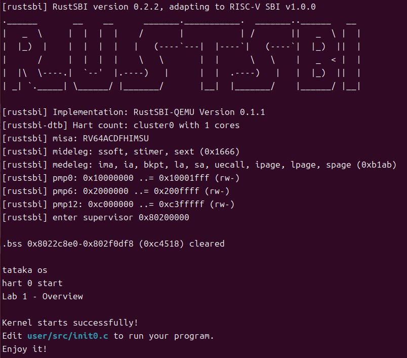
打开源代码根目录下的Makefile文件，找到QEMU的配置，可以看到这里写的是 QEMU 的执行参数
|
|
-machine virt：指定 QEMU 模拟的硬件平台-bios bootloader/sbi-qemu：加载 rustSBI 作为 bootloader-kernel $(BUILD_ROOT)/kernel：指定加载的内核镜像-m 128M：分配 128MB 内存-smp $(CPUS)：指定 CPU 核心数量-drive file=$(fs.img)：挂载文件系统镜像
用户级模拟
用户级模拟不会模拟完整硬件，只模拟用户程序运行所需的 CPU 执行环境。QEMU 会翻译不同架构的指令，然后将程序的系统调用转发给宿主机。这会让快速验证程序行为更方便
进入用户程序目录，创建hello.c，之后要进行模拟的就是这个程序
|
|
这个程序实现了对test.txt的创建、打开、写入、读出指定的字符串
|
|
返回项目根目录，用make user交叉编译这个程序。编译的所有结果在build/下，构建的可执行二进制格式文件在build/user_prog下
|
|
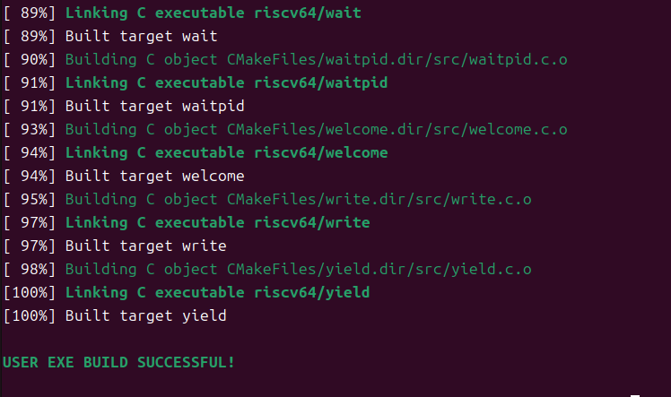
调用 QEMU 用户级模拟
|
|
可以看到如下输出，也能在项目根目录下找到对应的test.txt
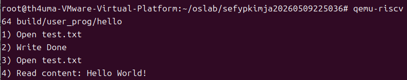
给 QEMU 传递-strace参数来输出程序运行过程中产生的系统调用日志
|
|
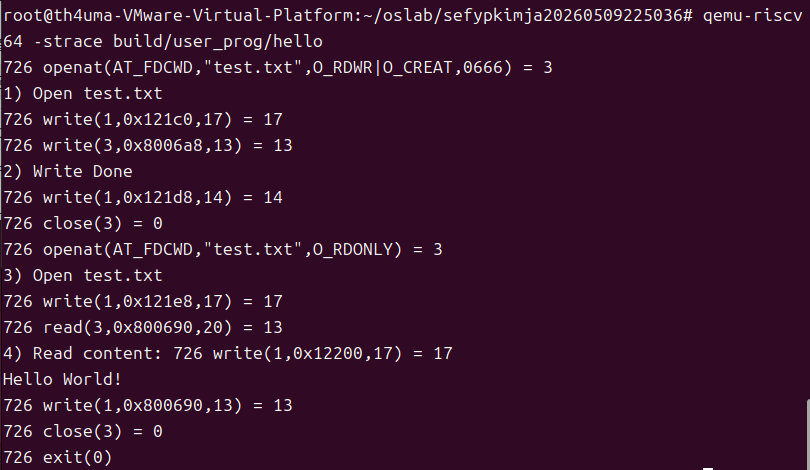
对比
这里需要对比 QEMU 用户模拟的日志和系统模拟的日志，这是为了之后调试可以通过对比两份日志的差异，方便的看出来哪里出现问题
使用make clean来清除构建，然后启动系统的debug模式
|
|
进入 shell 后运行程序
|
|
可以看到非常多的日志输出，这些日志是内核输出的 syscall 调试信息。为了解决日志过多，找不到需要的日志这个问题，可以修改src/kernel/syscall.c这个文件
Ctrl + a ，x退出QEMU，找到syscall函数，修改debug为debug_if，并指定过滤条件，作用是只打印 hello 进程的 syscall
|
|
重新清除构建并启动系统，可以看到下面的日志
|
|
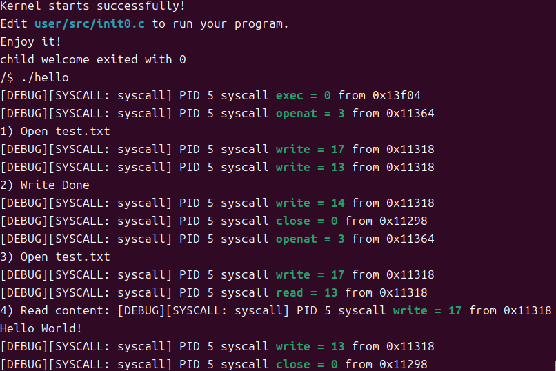
可以注意到这里的日志和上一步用户级模拟输出的日志本质上是一样的。在之后的开发中，因为 QEMU 用户级模拟最终还是依赖宿主 Linux 来处理 syscall，因此可以作为基准，和自己开发的系统中生成的日志进行对比，不一样的地方就是需要修改的地方
注意：每次修改构建参数之前都要执行
make clean，否则可能出现旧缓存导致的错误
GDB 调试
GDB是重要的调试程序，对于开发中的排错非常实用
启动
启动调试版 QEMU，执行后系统会暂停等待 GDB 连接
|
|
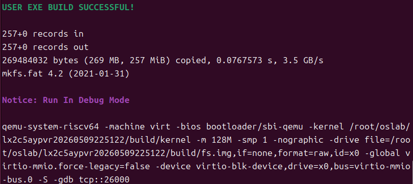
新开一个终端，进入容器中的实验目录，然后启动GDB
|
|
进行连接，成功后 GDB 就接管了 QEMU 里的 CPU
|
|
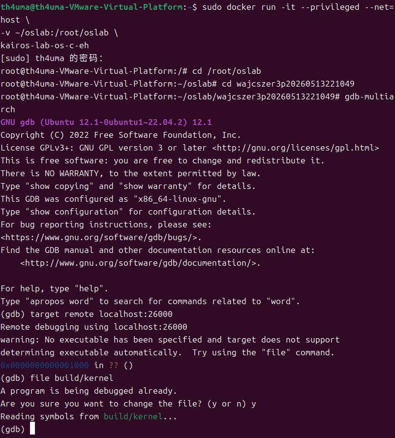
常用命令：
断点：b syscall
继续运行：c
执行下一行：n
进入函数：s
查看寄存器：info registers
查看调用栈：bt
查看当前源码位置：list
查看变量：p 变量名
查看内存：x/16x 地址
退出 GDB：q
实战
启动系统后看到下面的输出，意思是系统最初的用户进程init0退出了，所以内核报错后停止
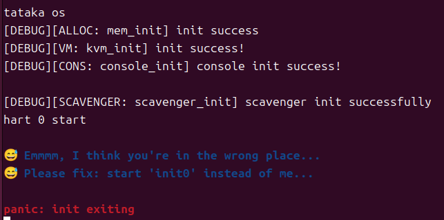
因此关键是找到最初的用户进程，根据提示找到src/kernel/proc.c，打开后搜索init0，可以看到
|
|
说明USER0决定第一个用户进程
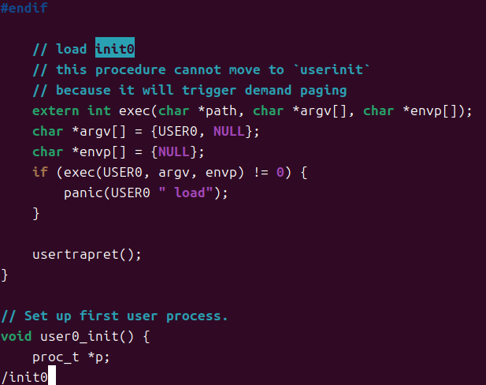
在根目录查找USER0的定义
|
|
可以找到#define USER0 "masquerade"，这就是问题所在
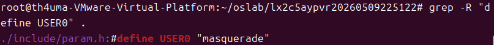
正常情况下，系统启动时第一个运行的用户程序应该是#define USER0 "init0"，但现在被改成了masquerade，所以系统启动后实际执行了这个程序。它就是实验故意放进去的假程序，不会正常启动系统，而是输出提示然后退出
问题在于第一个用户进程是不能随便退出的。对于操作系统来说，kernel 虽然启动完成，但用户态环境还没有真正建立起来。第一个用户进程就像整个用户空间的根节点，一旦它退出，后面所有东西都没法继续运行。所以系统看到它退出就会直接停止运行，报错panic: init exiting
在 Linux 中也是一样，启动后会有一个最初的用户进程，一般是 init 或 systemd， PID 永远是 1。如果它异常退出，Linux 就会认为系统发生错误
第一个用户进程不能退出，否则系统将失去整个用户态环境
修复方法是编辑include/param.h这个文件，找到#define USER0 "masquerade"将masquerade改成init0
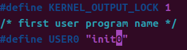
保存后重新编译，可以看到系统恢复正常
|
|
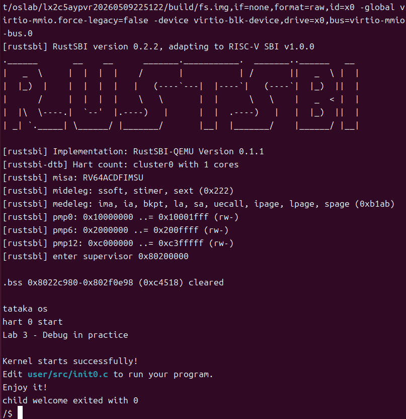
Backtrace
原理
函数调用是用栈来实现的，栈可以保存过往的函数调用上下文，让程序有类似记忆的功能。而backtrace就是通过栈进行回溯，利用fp遍历栈帧，然后读取每层的ra找到函数调用的来源链条
在根目录下创建hello.c，写入下面的代码，这个代码构造了一条函数调用链：main() > foo() > bar()
|
|
构建并调试
|
|
可以看到函数的调用栈被打印出来，前面的一串十六进制是地址，后面的是函数名，按照bar，foo，main的顺序，刚好对应出栈的顺序
程序运行时，每调用一次函数，CPU就会创建一个栈帧。栈帧和栈的区别是：栈是程序运行中存储所有函数调用信息的总的数据结构，占用一整块连续内存，而栈帧是其中单次调用函数产生的数据，相当于栈的一个单元
栈帧里面保存了：
- 返回地址
Return Address，RA：当前函数执行结束后，程序应该返回继续执行的位置 - 帧指针
Frame Pointer，FP：指向上一级栈帧的位置，用来形成函数调用链，方便回溯 - 局部变量
Local Variables：当前函数内部的临时变量 - 寄存器值
Saved Registers：函数调用前需要暂时保存的寄存器值，用于之后恢复 CPU 状态 - 函数参数
Function Arguments：传递给当前函数的输入数据
调用结束后，这个栈帧就会弹出。backtrace这个操作本质就是通过当前函数保存的fp，来向上一级级的遍历，最终找到完整的调用链条，并输出链条中每个函数的返回地址，也就是ra(bar)、ra(foo)、ra(main)
注意：这里输出的地址不是当前函数或者上一级函数的入口地址，而是当前函数执行完成后，上一个函数应该继续从哪句开始执行，ra就是这一句的地址。和fp的区别是fp找栈帧位置，ra找具体执行
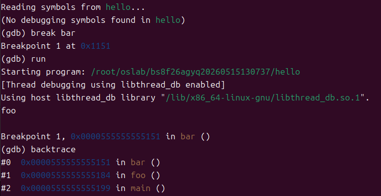
默认情况下程序只会保存ra地址，不能知道其他信息，上面看到的来源函数其实是GDB自动翻译的。为了便于定位，可以在编译时加上编译选项-g，也就是在ELF文件中加入DWARF调试信息表，记录地址对应函数和代码行号。GDB用ra地址来查表，找到这个地址的函数信息并输出。因此最终看到的输出效果是函数名加上这个函数执行完成后的下一行代码位置
|
|
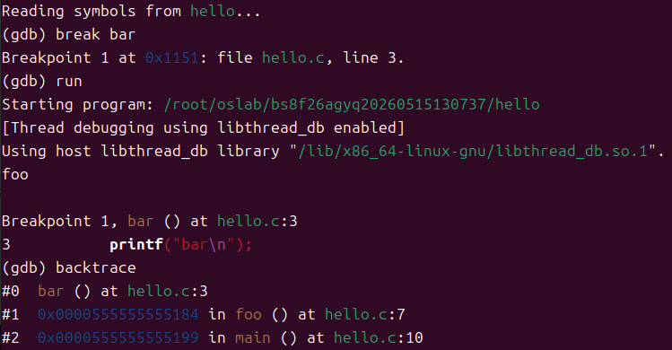
函数实现
在 src/utils.c中加入 backtrace 函数，这个文件存放的是内核调试工具
|
|
RISC-V 栈帧布局：
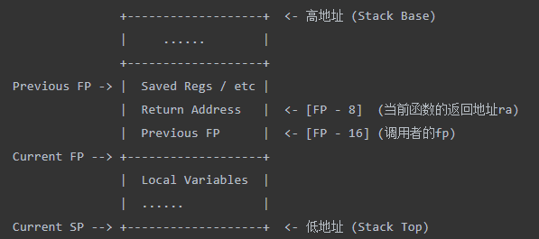
在RISC-V中，s0寄存器用于存储fp，因此首先通过asm volatile("mv %0, s0" : "=r"(fp));读取s0寄存器来获取当前函数栈帧的地址。一个栈帧中存储着两个fp，分别是自己的存储在s0，和上一个函数的存储在fp-16。fp 在栈帧中是一个固定的锚点，ra和调用者的fp都是以fp为位置基准存储，所以能通过地址偏移来访问到
为了防止函数一直向上寻找，超过当前进程的栈的地址范围导致崩溃，需要获取栈顶和栈底地址，其中：
-
current：当前进程的PCB表 -
kstack：这个进程的栈底 -
current->kstack：从当前进程的PCB表中获取栈底地址 -
KSTACK_SZ：Kernel Stack Size内核栈大小
在栈的范围里进行回溯：
*(uint64_t *)(fp - 8)：当前函数的返回地址，在调用完成继续执行上级函数时会作为起点使用，这就是调用链的内容*(uint64_t *)(fp - 16)：上一级调用者的栈帧指针，用来作为调用链的结构
最终将上级调用者的栈帧地址赋值给fp，就完成了一次回溯
测试
所有用户态进入内核的路径最终都会汇聚到syscall。为了看到内核的函数调用链，可以将backtrace()插入src/kernel/syscall.c的syscall()函数
|
|
重新编译并运行，进入系统后就可以看到打印出的地址了，这就是内核内部的调用链
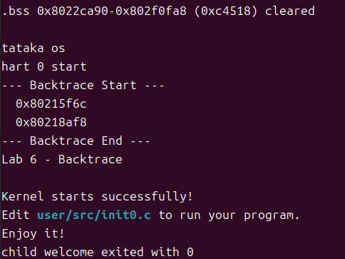
另开一个终端，运行下面的命令，然后将地址复制过来进行转换
|
|
可以看到syscall.c和trap.c，说明syscall的源函数是trap，也证明了syscall的执行前提是CPU陷入内核态
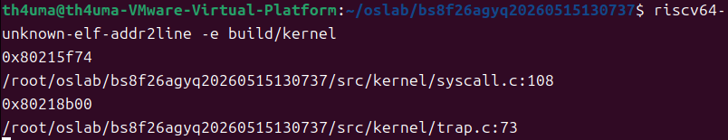
踩坑记录
脚本无法执行，报错
Permission denied
原因：在 Linux 中当前脚本没有执行权，从 Windows 解压复制或者 git 拉取的脚本经常出现这个问题
解决方法：chmod +x增加权限
|
|
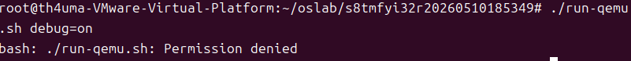
GDB 找不到文件，报错
build/kernel无法找到目标文件
原因：GDB运行在家目录，而文件在实验目录中
解决方法：进入实验目录再执行 GDB
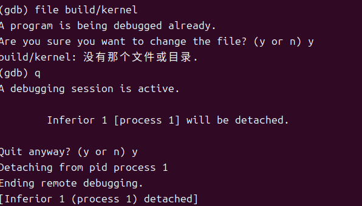
内核编译完成后无限循环输出
--- Backtrace Start ---和--- Backtrace End ---，中间不规律夹杂地址
原因：把 backtrace() 放到了 proc.c的myproc() 中。myproc() 一般用于获取当前正在运行的进程PCB，会被内核路高频甚至嵌套调用，而且不同调用路径进入 myproc 的栈深度不同，才会出现这种情况
解决方法：将 backtrace() 放到调用可控的syscall函数中
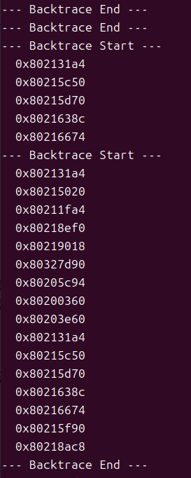
编译完成后，进入系统前报错
panic: kerneltrap
原因：把 backtrace() 放到了 proc.c的user0_init() 中，导致第一个用户进程还没有创建完成，栈信息还不稳定的时候就被调用。而backtrace依赖完整的栈，调用过程中可能会非法访问，从而触发了异常直接退出
解决方法：将 backtrace() 放到栈稳定后才被调用的syscall函数中
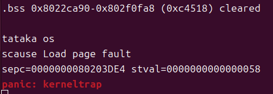
编译成功但不打印地址，没有任何输出
原因：为了防止打印次数过多，设置了过滤条件 if (p && p->pid > 2 && num == 1) { backtrace(); }），但条件太严格导致所有输出都被过滤掉了
解决方法：修改过滤规则，采用计数打印，打印一次就结束
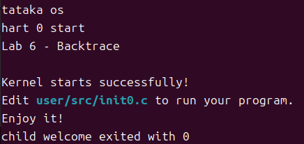
内核编译成功，输出正常，但输出次数过多
原因：虽然把 backtrace() 放到了正确的位置，但syscall()本身会被多次调用，比如欢迎语句的输出，导致输出一个字符就执行一次backtrace
解决方法：添加过滤规则，计数打印，打印一次就结束
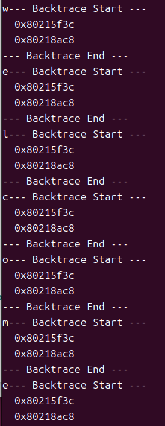
系统调用
用户程序没有权限直接访问内核，只能通过 syscall 对内核执行操作。系统调用也就是用户态通过ecall陷入内核，内核根据syscall号调用对应函数，然后返回结果
用户态上下文1111
用户态上下文指用户程序运行时的寄存器状态，包括程序计数器、栈指针、函数参数寄存器、返回地址等信息。用户程序通过系统调用、异常或中断进入内核态时，CPU 需要保存这些状态，否则内核处理完成后就无法回到原来的用户程序继续执行。
在这个实验框架中，用户态上下文保存在 trapframe 中。每个进程的 PCB 中都有一个 trapframe 指针。用户态陷入内核时，汇编入口会先把寄存器信息保存到这里，之后内核可以通过 trapframe 读取或修改用户程序的上下文。
这里要做的是让用户程序故意触发一次非法内存访问，然后在内核中查看它触发异常时的上下文。之后再修改 trapframe 中保存的返回地址，让程序跳过异常指令继续执行。
测试程序
在 user/src/context_test.c 中写入测试程序：
|
|
这行代码会向地址 0 写入数据：
|
|
地址 0 没有映射到合法用户内存，所以会触发 page fault，用户程序陷入内核态。
在 user/src/init0.c 中运行它：
|
|
重新编译运行后，可以看到程序在非法访问处崩溃，关键输出为：
|
|
这里 epc 表示触发异常时用户程序正在执行的指令地址，va 表示导致异常的虚拟地址。也就是说，用户程序在 0x100d8 处执行指令时，访问了虚拟地址 0。
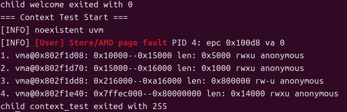
打印 trapframe
打开 src/kernel/trap.c，在 usertrap() 的 when_pagefault 分支中加入打印：
|
|
重新运行后可以看到类似输出：
|
|
这里最重要的是 pc。它表示用户程序触发异常时正在执行的指令地址。本次输出中 pc = 0x100d8，和前面异常信息里的 epc 0x100d8 一致。
ra = 0x100d0 表示函数调用返回后应该继续执行的位置。结合后面的反汇编结果可以看到，程序已经完成了开始信息的输出，真正触发 page fault 的位置仍然是 pc/epc 指向的 0x100d8。
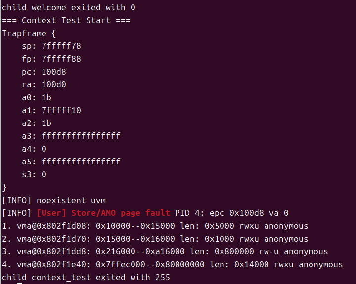
反汇编定位
用户程序编译后会放在 build/user_prog 目录中，可以用 objdump 反汇编：
|
|
然后搜索 trapframe 中打印出的 pc 地址：
|
|
可以看到 0x100d8 附近的指令：
|
|
li a4,0 会把 a4 置为 0，li a5,-1 会把 a5 置为 -1。后面的：
|
|
表示把 a5 的低 8 位写入 a4 + 0 指向的地址。由于 a4 = 0，这条指令实际执行的是向虚拟地址 0x0 写入一个字节。
地址 0x0 没有映射到合法用户虚拟地址空间，所以触发 Store/AMO page fault。异常信息中的：
|
|
也正好和反汇编结果对应。
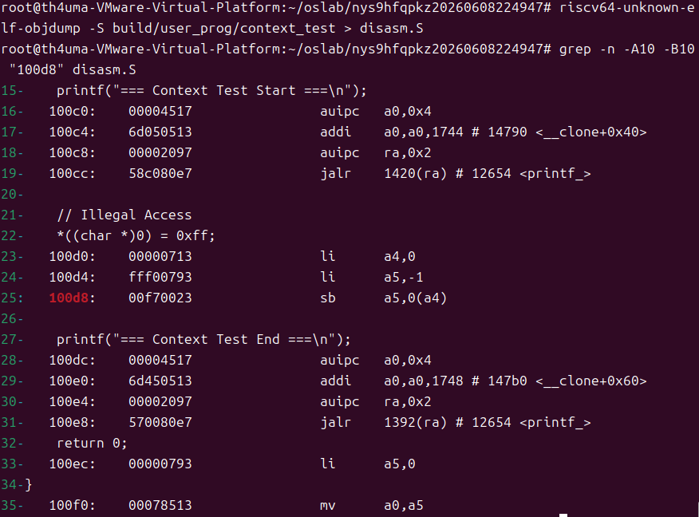
跳过异常指令
这里要求不修改用户程序，让后面的：
|
|
也能继续执行。
异常返回用户态时，CPU 会根据 trapframe 中保存的 pc/epc 回到用户程序继续运行。所以只要在内核中修改这个字段，就可以改变用户程序恢复执行的位置。
这次触发异常的是一条普通 RISC-V 存储指令，长度为 4 字节。反汇编中可以看到，非法访问指令位于 0x100d8，下一条指令位于 0x100dc：
|
|
所以只要把 pc/epc 加 4，就可以跳过导致异常的指令，从下一条指令继续执行。
在 src/kernel/pagefault.c 中找到 handle_pagefault()：
|
|
可以定位到：
|
|
打开 src/kernel/pagefault.c，在 handle_pagefault() 中添加针对 context_test 的特殊处理：
|
|
如果当前实验框架中的 trapframe 字段名是 pc，就改成：
|
|
这里判断 !ktrap 是为了只处理用户态触发的异常，避免影响内核态 page fault。判断进程名为 context_test 是为了只针对这个测试程序生效。判断 stval == 0 是为了确认这次异常来自空指针访问。
这样处理后，内核没有给地址 0x0 建立映射，也没有修改用户程序源码，只是修改了用户态上下文中保存的返回位置。异常处理完成后，程序会从 0x100dc 继续执行，也就是跳过 sb a5,0(a4) 这条非法写入指令。
验证
修改完成后重新编译运行，输出结果如下：
|
|
可以看到，程序仍然在空指针写入处触发了异常，并且内核成功打印出了当时的 trapframe 信息。此时 pc = 0x100d8，与反汇编中非法写入指令 sb a5,0(a4) 的地址一致。
在原始情况下，程序执行到这条指令后会因为访问地址 0x0 而被终止。修改 handle_pagefault() 后，内核在检测到 context_test 触发空指针访问时，将 trapframe 中保存的 pc/epc 加 4，使异常返回后不再重新执行 0x100d8 处的非法写入指令，而是从下一条指令 0x100dc 继续执行。
因此，程序成功输出了：
|
|
并且最终以退出码 0 正常结束：
|
|
这说明本次修改生效。trapframe 中保存的用户态上下文不只是能被读取，也能在异常处理过程中被内核修改，从而改变用户程序返回后的执行位置。
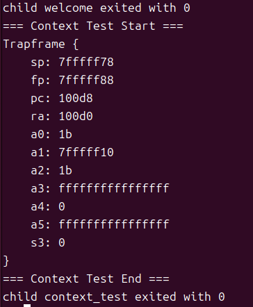
基础调用
调用表
首先分配系统调用号，打开entry/syscall.tbl文件，在尾部添加三列数据
|
|
666是系统调用号，必须是唯一的echo是 syscall 名称sys_echo是最终调用的内核函数
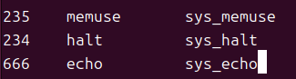
之后构建脚本会自动生成 syscall 分发表，也就是一个函数指针数组
获取字符串并打印
构建系统时会自动生成系统调用的声明，所以直接实现系统调用即可。在内核源码目录编辑src/sys_echo.c，写入代码来进行实现
其中有关地址与内存的部分需要用到argint、argaddr 、 copy_from_user 函数，因此先查找它们的定义，可以看到：
-
argint(int n, int *ip)：从 syscall 参数中取出第n个参数，并按整数保存到ip指向的位置 -
argaddr(int n, uint64_t *ip)：从 syscall 参数中取出第n个参数，并按用户态虚拟地址保存到ip指向的位置 -
copy_from_user(void *to, uint64_t from, size_t len)： 在内核态无法直接访问用户态的指针，因为用户页表和内核页表不一样，用户传入的是虚拟地址，这时候就要用到copy_from_user()来拷贝内存。先用argaddr取出用户地址，再用copy_from_user把用户态虚拟地址从from开始的len字节数据复制到内核缓冲区to中，代码中对应的是buf
完整代码如下：
|
|
可以看到这里的函数uint64_t sys_echo()并没有参数，这是因为系统调用和普通的用户态程序不一样
- 用户态程序实现函数的过程是先把参数的值存进寄存器，跳转到函数执行，这时候再从寄存器取出值
- 系统调用是在用户执行syscall后，参数被放入寄存器。调用号会被放进
a7寄存器，后面的参数会依次放进a0a1等寄存器。然后用户态执行ecall，CPU 触发异常进入内核。在CPU 陷入内核时，这些寄存器内容，也就是上下文会被保存到trapframe里用于之后恢复进程，argaddr(0, &user_ptr)就是在从这里取出第0个参数解析成地址，argint(1, &len)就是取出第一个参数解析成int。在系统调用完成后，返回值被存入寄存器，用户态寄存器恢复，CPU回到用户态。syscall也就是带参数的trap
完成后修改src/Makefile，添加下面的代码来将函数链接到内核，否则虽然代码存在但内核无法找到
|
|
测试
在是用户态程序源码目录下user/src/test_echo.c中写入测试程序
|
|
重新编译
|
|
进入系统后执行
|
|
这里不能输入
test_echo.c，因为.c是源码文件，内核只能执行 ELF 可执行文件，如果输入源码文件，内核尝试把文本文件当 ELF 加载，会出现execvp failure
如果正常，会输出Hello Navi，也就是刚刚代码中定义的值，说明系统调用成功
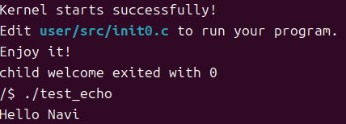
trace系统调用
trace 的作用是监听指定的 syscall 的执行，比如用户执行trace(syscall_num)，内核会监控当前进程之后的系统调用，如果执行了syscall_num对应的系统调用，就输出相关信息。这个进程的子进程也会继承监听项
PCB增加字段
PCB就是操作系统用来管理一个进程状态的数据结构，里面会放入这个进程的一系列信息，每个进程都有自己独立的 PCB。系统调用的监听状态需要保存在 PCB 里，PCB在源码中的位置是
proc
打开 include/kernel/proc.h，找到 struct proc 结构体，在最后一行添加系统调用号的字段。这里相当于每个进程的PCB里面新增了一个字段，让保存的状态里多一个监听号
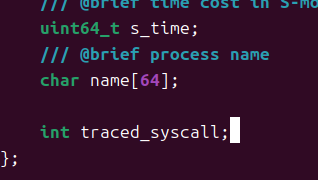
|
|
内核实现
主要实现
打开 src/kernel/syscall.c，进行两处修改
文件末尾添加 sys_trace函数，当用户态执行trace(num)时，num就会被写入当前进程PCB的traced_syscall部分
|
|
在执行完系统调用，并将返回值放进a0寄存器后，对系统调用进行判断，如果和traced_syscall中存储的调用号相符就进行打印
|
|
调用表注册
系统调用需要一个唯一的 syscall number，用户态会通过这个编号告诉内核要调用哪个系统调用
在entry/syscall.tbl中添加调用表项，来注册524号系统调用
|
|
子进程继承
trace 有一个性质是子进程会继承监听状态，实现函数在src/kernel/clone.c 中。找到把父进程p的属性复制给子进程np的代码np->parent = p;，在这句之后，函数返回之前加上这一行：
|
|
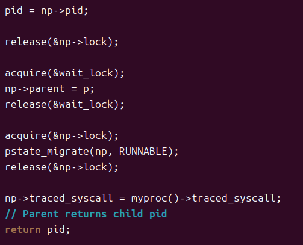
现在这样只能监听一个系统调用，因为 PCB 里只保存了一个 int traced_syscall。如果想同时监听多个系统调用，可以把它改成数组来存储监听号
用户态调用
在 Linux 中，一般会在用户态头文件
user/include/unistd.h末尾添加声明
1 2#define SYS_trace 524 int trace(int syscall_num);
SYS_trace：定义系统调用号trace()：用户态声明trace函数
这个环境没有 libc 提供标准的封装，所以用户态不能直接调用普通的 trace()，需要自己封装一个trace函数发起syscall。也就是手动把 524 和监听目标分别放进a7和a0寄存器，然后触发 ecall 进入内核，通过a0寄存器返回系统调用的返回值
编辑 user/src/init0.c ，在开头void __run(char *argv[]);后面添加下面的代码
|
|
在main函数中新增下面的程序，先让trace监控172号系统调用getpid，然后执行调用，再创建一个子进程并调用，看内核是否会分别输出getpid和它的子进程信息。最后验证取消监听后还有没有输出
|
|
重新编译，可以看到成功输出了监控信息
|
|
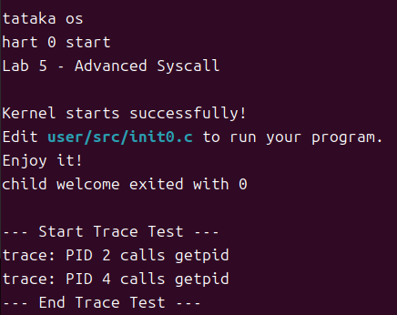
踩坑记录
printf报错implicit declaration of function 'printf'和stdio.h: No such file or directory
分别是最开始没有添加头文件，和第二次加入#include <stdio.h>产生的报错
原因：内核不是普通 Linux 用户程序，没有标准 C 库环境，不能直接使用 libc
解决方法：用内核自己的头文件#include "printf.h"
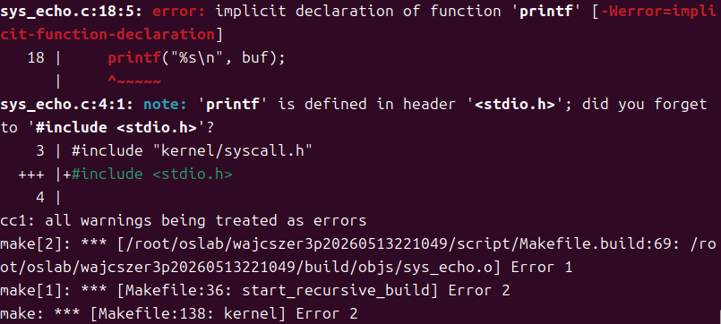
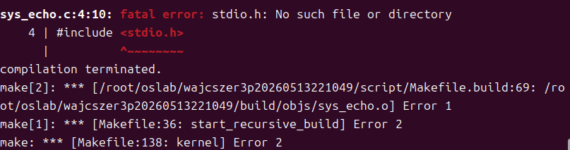
sys_echo报错undefined reference to 'syscall'
原因：用户态代码里调用了 syscall()作为trace函数，但代码里根本没有这个函数的实现，所以直接报错找不到
解决方法：直接在 init0.c 里自己写一个内联函数来实现 trace 系统调用，这样就不再依赖写好的函数
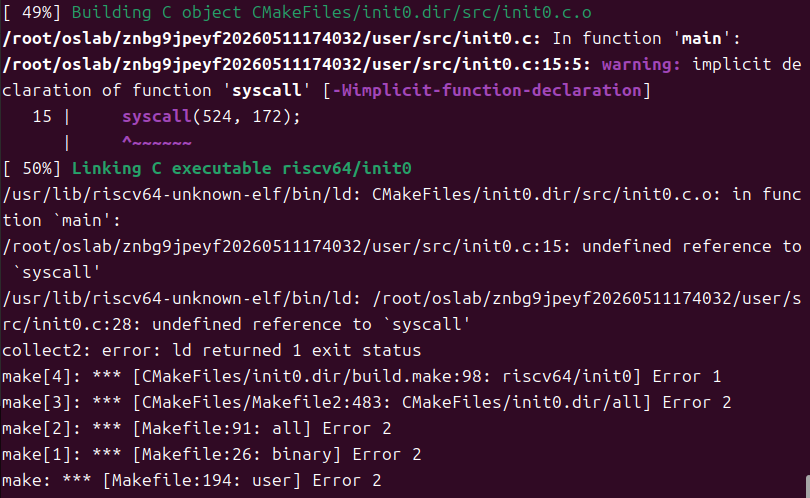
copy_from_user参数类型错误，报错passing argument 2 of 'copy_from_user' makes integer from pointer without a cast
原因：把用户态的 char * 指针直接传给了 copy_from_user，但正常情况下传的应该是用户地址数值形式。用户态指针在内核里是用户虚拟地址，不能直接当普通指针用
解决方法：先用 argaddr 把参数取成 uint64_t 地址
|
|
然后再调用copy_from_user(buf, addr, len);，内核通过传入的地址和长度信息把数据从用户寄存器拷贝到内核
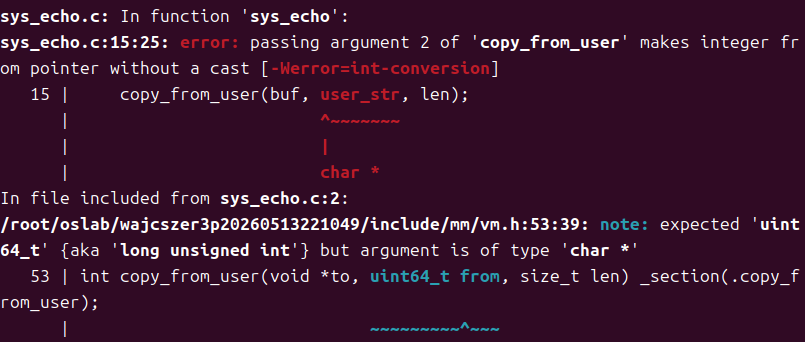
编译完成后报错
panic: init exiting
原因：init0.c写错导致第一个用户进程编译错误退出，之后的用户进程无法启动，最终系统崩掉
解决方法：排查init0.c，保证逻辑完整
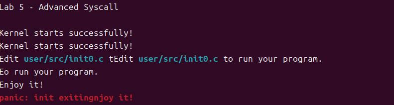
内存与程序
内存布局
这部分是要在进程执行程序的时候，把这个进程当前用的内存区域列表打印出来
要打印内存区域，首先就要找到保存这个区域的数据结构vma，vma就是描述一段虚拟内存的结构体。每一个进程会被分配到一块连续地址的虚拟内存，其中划分出来多块不同作用的区域，最后用页表来将虚拟地址映射到物理地址，不同进程的物理页可以独立或者共享，虚拟内存解决了物理内存不连续和需要隔离的问题
一个进程的虚拟内存并非一整块，是分成很多作用不同的段，每一段就是一个vma_t，比如程序代码、全局变量、堆、栈这一类。vma由链表存储，链表入口是vma_head，上面的一个段也就是一个节点，所有链表都存储在mm_t结构体中
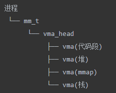
打印进程内存区域
在根目录运行 grep 命令查看 vma_t这个结构体的定义
|
|
我的目的是找到vma_t中用于把节点挂在链表上的变量名称，从输出中可以发现，这个变量叫 head
|
|
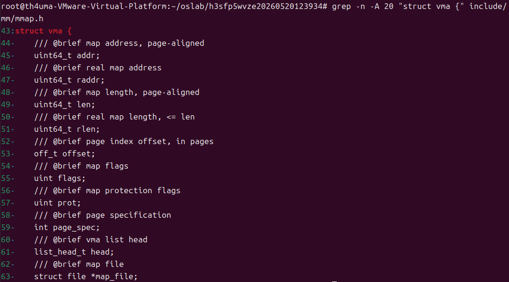
addr：按页对齐后这段虚拟内存的起点raddr：实际映射的起点物理地址len：按页对齐后这段虚拟内存的总大小rlen：实际使用的长度，一般小于或等于lenoffset：文件映射时，从文件哪个位置开始flags：这段内存的类型prot：访问权限，标记区域是否可以读写执行page_spec：页相关的额外规则head：用于链表的连接map_file：映射的文件指针，没有文件就是空
在用于管理内存的代码 mm/mmap.c写入 mmap_print 函数
|
|
逻辑就是传入某个进程的mm_t，然后从head开始遍历并输出里面所有的vma
list_for_each_entry(vma, &mm->vma_head, head)中的参数含义：
&mm->vma_head：链表入口vma：当前遍历到的 vma_thead：将节点挂入链表的变量，用来找下一个节点
验证
在 src/kernel/exec.c中这个位置插入函数调用
exec的作用是将一个进程中的程序换成新的程序。这个位置是在某个进程执行exec切换程序，初始化好新程序的内存但还没有释放旧内存的时候。放在这里是因为可以完整观察新程序的虚拟内存布局，还不会受到执行程序对内存产生的影响
|
|
重新编译，可以看到成功输出了监控信息。这里看到多段信息，这说明在内核编译完成，进入系统的过程中有多个进程都调用了exec
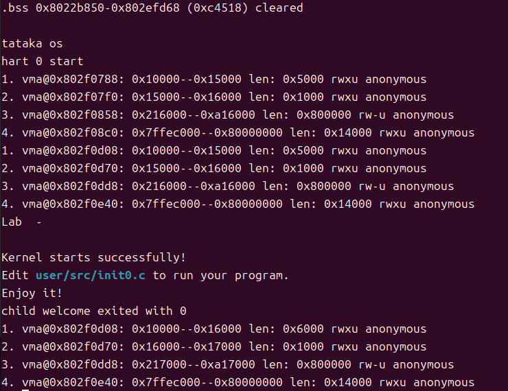
程序加载
程序编译后获得的文件就是ELF，比起源代码来说，ELF 文件还记录了程序应该怎么放进内存，包含地址、长度、权限这些内容
一个 ELF 里面有一个 Program Header Table，里面有很多条 Program Header。每一条 Program Header 描述一个段，也就是一个 Segment。一个 Segment 由多个 Section 组成
ELF详解
编译出来的内核本质上是一个ELF可执行文件，放在build/kernel中。可以用 readelf查看它的基本信息和它应该怎么被加载到内存。-h 就是查看ELF 文件头ELF Header，-l 也就是查看程序加载表Program Headers
|
|
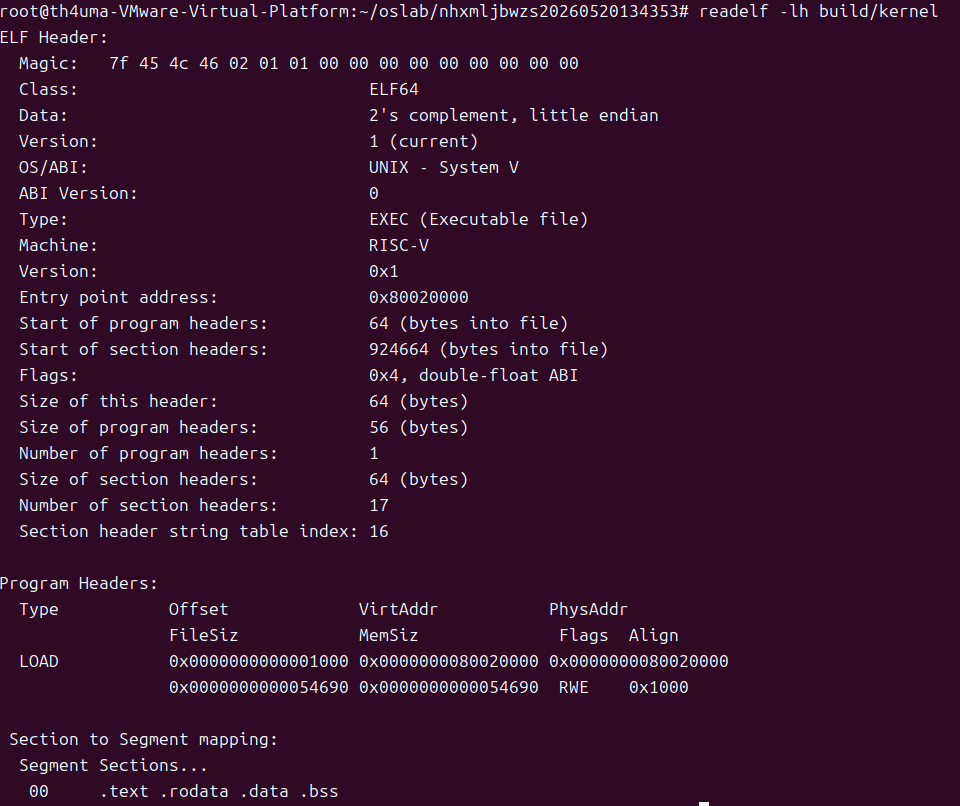
ELF Header
ELF Header的作用是存储程序基本参数，主要的如下：
Class: ELF64：文件分类：这是 64 位 ELF 文件Data: little endian：数据存储规律：数据按小端序存储OS/ABI: UNIX - System V：指定了二进制程序使用的ABI标准，规定了这个可执行程序的运行环境，比如初始参数argc、argv，栈结构，环境变量传递等Type: EXEC：文件类型：这是可执行文件Machine: RISC-V：CPU架构：这个程序是给 RISC-V CPU 跑的Entry point address: 0x80020000：CPU执行程序的起始地址：一个虚拟地址号Number of program headers: 1：program headers数量：这个 ELF 里面只有一个LOAD段
Program Header
ELF文件分为很多段Segment，而Program Header的作用就是存储这个程序的所有段参数，也就是和程序加载到内存有关的参数。当程序被加载执行时，这些段会被操作系统从文件系统加载进内存中
Type: LOAD：表示这个段需要被加载进内存Offset: 0x1000：在 ELF 文件里的起始位置VirtAddr: 0x80020000：放到虚拟地址0x80020000PhysAddr: 0x80020000：对应的物理地址是0x80020000FileSiz: 0x54a40：在ELF文件中真实大小MemSiz: 0x54a40：加载到内存后所占空间Flags: RWE：这一段可读写执行Align: 0x1000：按页大小对齐
图中这段的意思是在 ELF 文件从 0x1000 开始的一段内容，要被加载到内存地址 0x80020000，大小是 0x54a40，权限是可读写执行。按列来看是ELF文件，虚拟内存，物理内存三块，按行来看是地址，大小与参数
内核的段比较特殊，只有一个，其他类型的段可能有好几个，比如数据段、代码段，还可以分别指定不同的读写执行权限
PHDR：记录 Program Header 自己在内存中的位置INTERP：记录动态链接器路径，比如/lib/ld-linux-riscv64-lp64d.so.1DYNAMIC：保存动态链接需要的信息，比如依赖库、重定位表、符号表NOTE：保存一些额外说明信息TLS：线程局部存储相关信息GNU_STACK：说明栈是否可执行GNU_RELRO：运行初期可写，重定位完成后改成只读的区域
Section 和 Segment
Section 是编译器使用，Segment 是加载器和操作系统执行程序时使用。.text、.rodata、.data、.bss 这些 section 被打包进了同一个 LOAD Segment 里，加载器加载这个 LOAD 段的时候，它们都会一起进内存
.text：代码.rodata：只读数据，比如字符串常量.data：已经初始化的全局变量.bss：未初始化的全局变量
用户与内核对比
上面查看的是内核 ELF，它比较特殊，一般由 bootloader 加载到固定的内核地址，比如这里的 0x80020000。在操作系统真正运行以后，exec 加载的一般是用户程序 ELF
为了进行对比，可以自己写一个 helloworld 程序，然后用 gcc 编译，再用 readelf 查看它的 ELF Header 和 Program Header
|
|
编译并查看
|
|
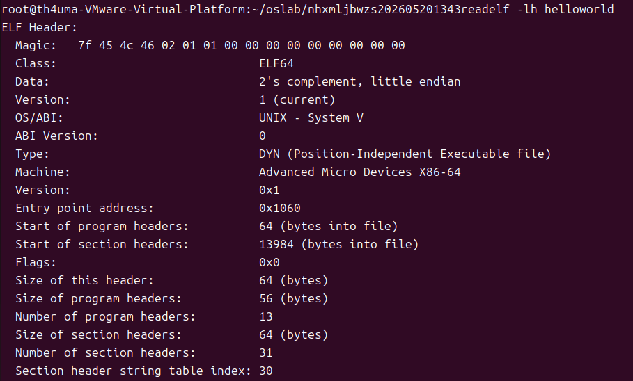
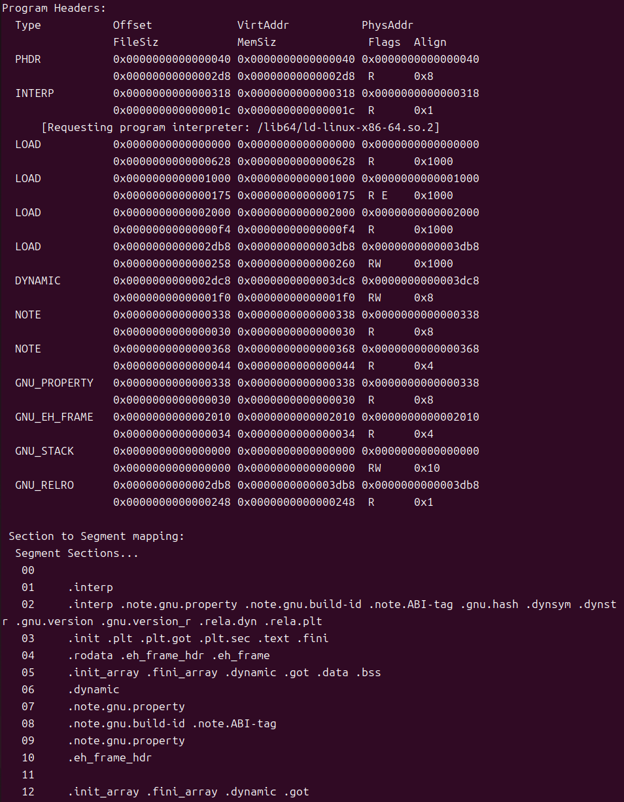
也可以加上 --static 编译成静态链接程序：
|
|
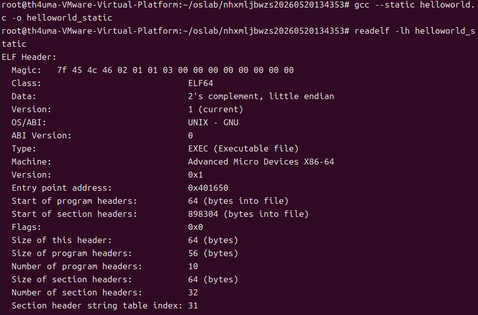
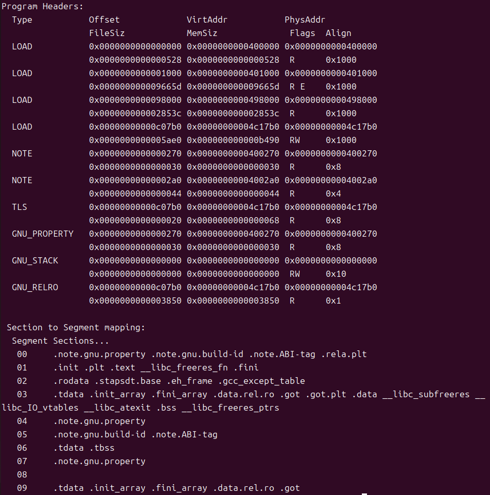
可以发现内核 ELF 比普通 Linux 用户程序 ELF 简单很多。内核 ELF 是 RISC-V 架构，固定入口地址，而且只有一个 LOAD 段，helloworld程序虽然很短但运行在 Linux 用户态，运行时涉及的东西更多，相应的也有更多的 Program Header 段
实现加载
这里需要遍历所有Program Header，将type是LOAD的部分加载进内存
程序加载的核心是 exec，内核执行 exec 时会丢弃当前进程原本的vma，然后按照ELF的规则建立新程序的vma，然后继续从ELF header记录的入口地址执行程序
程序需要用到MAP_FIXED，首先用 grep 确认一下它的定义
ELF 的 Program Header 已经写好了段应该放到哪个虚拟地址，
MAP_FIXED的作用就是要求内核不能随便找一块地址映射，而是必须按ph.vaddr指定的位置创建 VMA
|
|
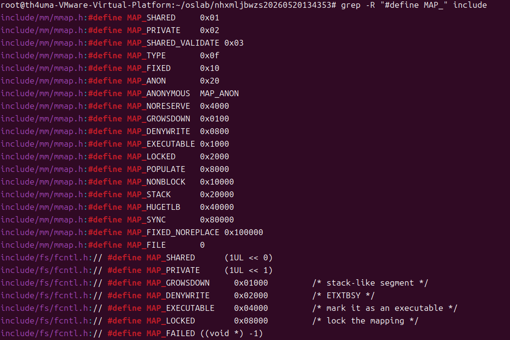
查找 struct proghdr 的定义，从而确认Program Header中的字段名
|
|
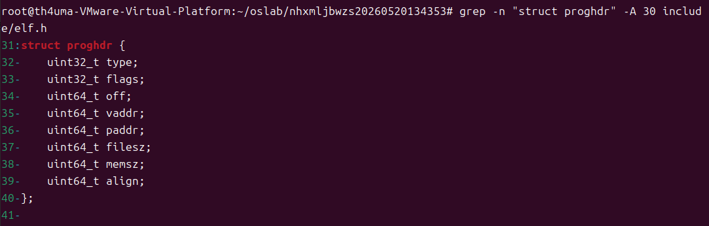
查找 mmap_map 和loadseg的定义
|
|
可以看到这两个函数的原型
|
|
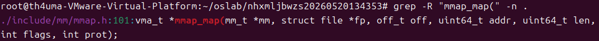
|
|
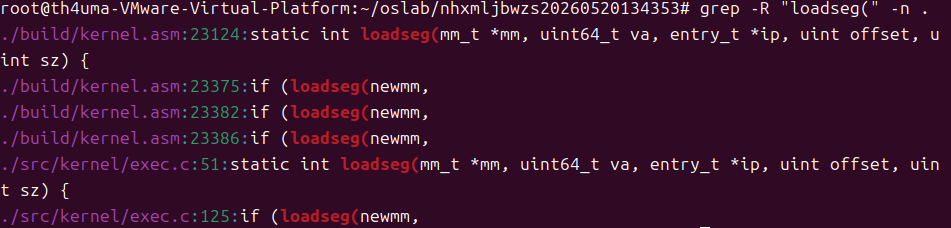
打开 src/kernel/exec.c，找到 exec 函数中处理 Program Header 的位置，添加下面的代码
|
|
加载一个 LOAD 段时，内核先根据 ph.vaddr 和 ph.memsz 算出这个段在虚拟内存里要占的范围，并按页对齐创建 VMA；然后用 ph.off 作为 ELF 文件中的读取起点，读取 ph.filesz 大小的内容，放到 ph.vaddr 对应的虚拟地址中
mmap_map 参数：
newmm：新程序的地址空间NULL：这里不直接绑定文件0：文件偏移参数，这里不使用start：按页对齐后的虚拟地址起点sz：按页对齐后的映射长度MAP_FIXED：要求映射到指定地址elf_map_prot(ph.flags)：根据 ELF 段权限设置 VMA 权限
loadseg 参数：
newmm：新程序的地址空间ph.vaddr：段内容要放到的虚拟地址ep：当前正在加载的 ELF 文件ph.off：在 ELF 文件中读取起点ph.filesz：需要从 ELF 文件中读取的大小
重新编译后可以看到打印出来的多组vma，说明成功创建新程序的vma并加载LOAD段
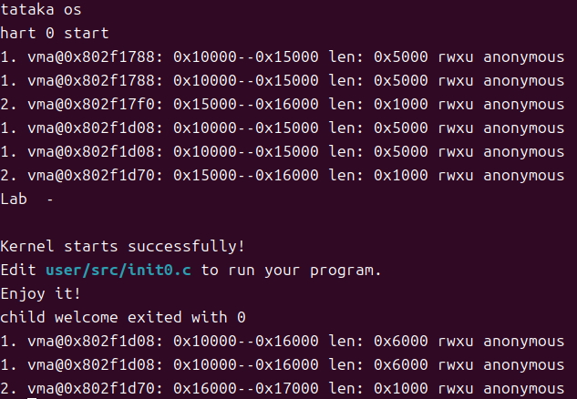
踩坑记录
mmap报错
'vma_t' {aka 'struct vma'} has no member named 'link'
原因：将链表遍历中用于连接链表的变量名写成了link，但struct vma 里面找不到这个变量，所以编译失败
解决方法：用 grep 查找 struct vma 的定义，可以看到用于连接链表的变量名实际上是 head，改正即可
程序加载代码编译时报错
'struct proghdr' has no member named 'offset'
原因：将loadseg中的字段名写成了offset，但struct proghdr 里面找不到这个变量，所以编译失败
解决方法：用 grep 查找 struct proghdr 的定义，可以看到用于确定在ELF文件中起始位置的字段名实际上是 off，改正即可
内核启动时报错
panic: init0 load
原因：创建 VMA 时直接用了 ph.vaddr 和 ph.memsz，没有页对齐。VMA 是按页管理的，如果直接映射原始范围，段的起始地址或结束地址没有刚好在页边界，之后 loadseg 写入段内容时，可能因为部分页没有正确创建导致失败
解决方法：创建 VMA 前先对段范围做页对齐。用 PGROUNDDOWN(ph.vaddr) 得到按页向下对齐后的起始地址，用 PGROUNDUP(ph.vaddr + ph.memsz) 得到按页向上对齐后的结束地址，再用对齐后的范围创建 VMA
|
|
然后使用 start 和 sz 创建映射即可。修改后 VMA 的范围会覆盖当前段涉及到的所有页，loadseg 写入时对应的虚拟地址已经被 VMA 完整覆盖，init0 可以正常加载
进程与线程
内核线程
内核线程就是运行在内核里的特殊进程，从创建开始就在内核态运行。虽然它叫线程，但和普通进程一样会被调度器调度，也有自己的 PCB 和内核栈。区别在于普通用户进程运行的是用户程序，而内核线程运行的是内核里的函数。类似内核自己创建出来的后台任务，用来完成一些持续的维护工作
读取密码并打印
这部分的目标是创建一个内核线程，让它在文件系统初始化完成后，读取文件镜像里的
/password文件并打印
这里需要使用 kthread_create 创建线程，使用 namee 查找文件目录项，使用 reade 读取文件内容。首先在源码里查找这些函数的定义
|
|
kthread_create(char *name, kthread_callback_t callback)：创建一个内核线程。name是线程名称，callback是线程启动后执行的函数namee(entry_t *from, char *path)：根据路径查找文件系统中的目录项。from表示查找的起始目录，path表示要查找的路径reade(entry_t *entry, int user, uint64_t buff, off_t off, int n)：从指定文件目录项中读取内容。entry是要读取的文件，user表示目标地址是否是用户态地址，buff是保存读取结果的缓冲区地址，off是文件内读取偏移，n是读取字节数
在 src/mythread.c中写入下面的代码，实现mythread_fn函数
|
|
创建线程
工作函数写完后，还需要在 mythread_init() 中真正创建线程。在 src/mythread.c增加这个函数
|
|
这个函数创建了一个叫 mythread 的内核线程。系统启动过程中调用 mythread_init() 后，这个线程就会进入调度，调度器选中它时，就会开始执行 mythread_fn函数
验证
在 src/main.c 中，调用创建线程函数
|
|
重新编译运行，可以看到启动过程中就输出了密码。这是因为这条输出是内核线程自己在内核态中用 kprintf 打印出来的，不依赖用户态程序触发。系统启动后，只要线程被创建，而且文件系统已经初始化完成，它就能自己执行读取文件的任务
yield系统调用
原理
yield 的作用是让当前进程主动让出CPU。它将当前进程的状态从RUNNING改成RUNNABLE，然后调度器重新选择可运行的进程。而当前进程会重新参与调度，下一次被选中后再运行
yield的实现在src/kernel/sched.c中
|
|
myproc()：获取当前进程acquire(&p->lock)：给当前进程加锁，防止状态修改时出问题pstate_migrate(p, RUNNABLE)：把当前进程状态改成RUNNABLEsched()：进入调度器，重新选择可运行的进程release(&p->lock)：当前进程之后被调度回来后，释放进程锁
实现调用
系统调用需要先分配一个没有被使用过的 syscall number，打开 entry/syscall.tbl，在尾部添加
|
|
124是系统调用号sched_yield是系统调用名称sys_sched_yield是内核中真正执行的函数
编辑 src/sys_sched_yield.c，实现 sys_sched_yield。这部分很简单，用户调用sched_yield后，内核直接执行yield即可
|
|
最后修改src/Makefile，添加下面的代码来将函数链接到内核，否则虽然代码存在但内核无法找到
|
|
测试
在 user/src/init0.c 开头部分写入这个测试函数，这个测试会创建 3 个子进程，每个子进程循环 5 次。每轮循环里，子进程都会先调用 sched_yield() 主动让出 CPU，等下次被调度器选中再打印自己的 PID 和当前循环次数
|
|
在main函数中，进入系统打印欢迎消息之后加入调用
|
|
重新编译并运行，可以看到如图输出
输出三个不同PID的Child说明三个子进程都成功输出了，但输出顺序没有规律，并且有些内容被嵌套了，这是因为多个子进程是平行关系，无法预测调度器下一个选择的进程，类似于抢CPU
如果想让输出有序，就不能让子进程自由竞争 CPU。可以创建一个子进程后立刻 wait，等这个子进程全部输出结束后，再创建下一个子进程，这样输出顺序就会固定
|
|
进程时间片
原本OS的进程调度是基于时间片轮转来调度的。时钟中断后内核会让当前进程立刻yield让出 CPU，然后调度器选择下一个进程，一个进程每次只能执行一个时间片
而这里要做的是让一个进程可以连续执行多个时间片，只有剩余的时间片用完时才触发调度
PCB 增加字段
时间片属于进程运行状态的一部分，所以需要保存在 PCB 中。打开 include/kernel/proc.h，找到 struct proc 结构体，最后一行添加time_slice字段，用来记录当前进程还剩多少时间片
|
|
再定义3作为默认时间片数量，也就是一个进程被调度器选中后，最多可以连续经历 3 次时钟中断
|
|
时钟中断
时间片是在时钟中断里消耗的，所以需要修改
src/kernel/irq.c
原来的逻辑是每次时钟中断都直接让出 CPU
|
|
改成这样的程序，这样每次时钟中断时当前进程不会立刻调用 yield()，而是剩余时间片减一，只有减少到0后才会让出CPU
|
|
初始化时间片
时间片用完后，进程会通过 yield() 回到调度器。调度器的实现在 src/kernel/sched.c 的 scheduler 中，可以在进程被选中后，真正被切换之前初始化时间片，这样在它被调度时，又可以继续运行多个时钟中断周期
|
|
重新编译运行后可以看到输出了结果，time_slice是一直在减少的，说明每一次时钟中断，时间片就减少1。减少到0后就输出了yield，说明这个进程在时间片用完后调用 yield() 让出 CPU
时间片主动让出
进程让出 CPU 有两种情况，一种是时间片用完，在时钟中断中调用 yield()，另一种是进程主动调用 yield()比如 sched_yield() 。为了区分这两种情况，可以在 PCB 中增加一个字段记录让出原因
|
|
为了更容易观察到时间片耗尽的情况，这里将默认时间片改成2来增加切换次数。还需要定义两个值用来标记是哪一种让出情况
|
|
在 src/kernel/irq.c 中，时间片用完时，把原因标记为时间片耗尽
|
|
然后在 src/kernel/sched.c 的 scheduler 中， swtch 返回后判断原因。打印完成后再把 yield_reason 初始化成 YIELD_VOLUNTARY，避免影响下一次判断
|
|
这里的 p 是调度器刚刚切换过去运行的进程。swtch 前的 p 是将要运行的进程，swtch 返回后的 p 是刚刚运行完并让出 CPU 的同一个进程。swtch 返回后控制权回到了调度器，所以此时可以通过 p->yield_reason 判断它刚才为什么让出 CPU
这样如果进程因为 time_slice 减到 0 被切走，就会打印时间片耗尽，如果没有被标记为 YIELD_TIMESLICE，就说明是其他情况导致的yield
内核main中有一个叫做scavenger的内核线程，它会做出主动让出调度器的动作。运行它之后，输出中会更容易看到主动让出的提示，因为它会主动调用 yield()
在 src/main.c 中，把这一行注释去掉
|
|
重新编译运行，发现输出中不停出现yield voluntarily，说明这个线程会循环调用yield
时钟中断111
时钟中断就是硬件定时器周期性打断 CPU，让内核重新获得控制权。如果没有时钟中断，一个进程只要不主动 yield，就可能一直占着 CPU。加入时钟中断后，内核可以定期进入调度逻辑，从而实现进程切换和时间片消耗
实现
中断和异常的入口在 src/kernel/trap.c，里面有两个入口函数：
usertrap()：处理来自用户态的 trapkerneltrap()：处理来自内核态的 trap
这两个函数都会根据 scause 判断 trap 的原因。如果是中断，就会进入 when_irq 分支，然后调用 src/kernel/irq.c 中的 handle_irq(scause)
|
|
handle_irq() 中已经写好了时钟中断的处理逻辑，真正要补的是 when_clock，让它能匹配时钟中断
|
|
这段逻辑表示识别到时钟中断后，先用 clockintr() 更新系统时间，再用 reset_timer() 设置下一次时钟中断。如果当前进程正在运行并且没有被杀死，就调用 yield() 让出 CPU
实现
可以看到 when_clock 定义在 include/riscv.h 中，目前还是 TODO。RISC-V 的 scause 最高位表示是否为中断，低位表示中断编号。Supervisor Timer Interrupt 的编号是 5，所以完整值是 INTERRUPT + 5
在 include/riscv.h 中添加
|
|
因为 handle_irq() 中是 switch (scause)，所以 when_clock 最终需要展开成一个 case。这样当 scause 等于 INTERRUPT + 5 时，就会进入时钟中断处理分支
重新编译运行，可以看到一直循环输出clock，说明时钟中断是周期性无限发生的
踩坑记录
编译时报错
implicit declaration of function 'test_yield'
原因：在 user/src/init0.c 的 main() 中调用了 test_yield()，但在调用前没有声明或定义这个函数
解决方法：将 test_yield() 函数在 main() 之前定义
编译时报错
TIME_SLICE_DEFAULT undeclared
原因：在 sched.c 中使用了 TIME_SLICE_DEFAULT，但没有在任何地方定义它。编译器找不到 TIME_SLICE_DEFAULT 所以直接报错
解决方法：在 include/kernel/proc.h 中定义默认时间片数量。这个文件是公共头文件，irq.c 和 sched.c都包含了它，因此可以使用其中定义的宏
|
|
文件系统
磁盘块缓存1111
磁盘访问速度比内存慢很多，所以文件系统不会每次都直接访问磁盘，而是会在内存中维护一组块缓存。读取磁盘块时，先在缓存里查找。如果目标块已经存在，就直接返回缓存；如果不存在，再选择一个空闲缓存块回收，用它去缓存新的磁盘块。
这里使用 LRU 链表管理缓存块。链表头部表示最近使用过的缓存，链表尾部表示最久没有使用的缓存。释放一个缓存块时，如果它已经没有外部引用，就把它移动到链表头部。缓存未命中时，从链表尾部向前找 refcnt == 0 的块进行回收。
函数实现
打开 src/fs/bio.c，补全 bget：
|
|
前半部分是在缓存链表中查找目标块。如果 dev 和 blockno 都匹配，说明目标块已经在缓存里，直接增加引用计数，然后获取这个缓存块自己的睡眠锁并返回。
如果没有命中缓存，就从 LRU 链表尾部开始查找。尾部是最久没有使用的缓存块，最适合被回收。但不是所有尾部块都能直接回收，只有 refcnt == 0 的块才说明当前没有外部使用，可以被替换成新的磁盘块。
回收时需要更新设备号、块号、有效标记和引用计数：
|
|
valid 设为 0 表示这个缓存块虽然已经绑定到了新的磁盘块号，但内容还没有真正从磁盘读入。之后上层读取时会再触发磁盘读入。
再补全 brelse：
|
|
brelse 表示上层已经使用完这个块缓存。这里先同步缓存和磁盘内容，然后释放块自己的睡眠锁。之后修改全局缓存状态，所以需要获取 bcache.lock。
当 refcnt 减到 0 时，说明这个缓存块当前已经没有外部引用。它刚刚被使用完，所以属于最近使用过的块，需要从原来的位置删除，再移动到 LRU 链表头部。
|
|
这样链表尾部就会逐渐保留最久没有被使用的缓存块。之后缓存未命中时，从尾部反向遍历，就能优先回收最近最少使用的块。
FAT32簇链1111
FAT32 是一种显式链式分配文件系统。文件内容不一定连续存放在磁盘上，而是按簇组织。每个簇在 FAT 表中都有一个对应表项，表项里保存的是下一个簇号。只要从文件起始簇开始，不断读取 FAT 表中的后继簇号，就可以沿着簇链找到整个文件的数据。
这里要补全的是 fat_next_cluster，它的作用是给定当前簇号 cclus，返回它在 FAT 表中记录的下一个簇号。
函数实现
打开 src/fs/fat32.c，找到 fat_next_cluster：
|
|
开头先判断当前簇是不是空闲簇或者结束簇：
|
|
如果当前簇已经是结束标记，或者本身就是空闲簇，就不应该继续追踪后继簇号。继续查这种簇没有意义，所以直接触发 panic。
下面这句会读取当前簇号所在的 FAT 表扇区：
|
|
clus2fatsec 会根据簇号计算它对应的 FAT 表项在哪个扇区中。bread 则把这个扇区读入缓存，返回对应的块缓冲区。
真正读取后继簇号的是这一句：
|
|
clus2offset 会计算当前簇号对应的 FAT 表项在这个扇区内部的偏移。FAT32 中每个表项占 4 字节，所以找到偏移后，把这个位置的数据按 uint32_t 读取出来，就得到了下一个簇号。
FAT32 的表项虽然是 32 位，但有效簇号通常只使用低 28 位，高 4 位属于保留部分，所以读取后还需要保留低 28 位：
|
|
如果源码中已经定义了对应的掩码宏，可以用框架里的宏替代 0x0FFFFFFF。
最后释放缓冲区并返回结果：
|
|
bread 读取出的块缓冲区用完后需要通过 brelse 释放，否则会影响块缓存的正常使用。
验证
重新编译运行后，可以看到系统在读取文件时不断打印当前簇号和后继簇号：
|
|
这说明 FAT 表中记录的是一条显式簇链。文件系统先拿到当前簇号，再通过 fat_next_cluster 查询 FAT 表，得到下一个簇号，然后继续沿着这条链读取后续数据。
后面启动 shell 时也能看到类似输出：
|
|
这说明系统在加载用户程序时已经正常使用了簇链追踪功能。如果后继簇号读取错误，跨簇文件就无法被完整读出，系统也可能无法正常启动到 shell。
FAT32下的文件检索
平时打开文件时，会传入一个文件名，比如 test.txt。文件系统会根据这个名字在目录中找到对应的目录项，之后再读取内容。FAT32 的目录项比较特殊，会涉及短文件名和长文件名，这里的框架已经把这些细节封装到函数里，所以只需要处理文件查找的逻辑即可
具体方法是遍历当前目录中的每一个逻辑目录项，拿到它的文件名，然后和目标文件名比较。如果名字相同，就把这个目录项保存下来，同时记录它在目录中的偏移位置
逻辑
首先在src/fs/fat32.c中查看入口函数，作用是在指定目录簇下寻找名为name的目录项
|
|
fat_travs_logical_dir 负责遍历目录。它每遍历到一个逻辑目录项，就会调用一次 lookup_handler。所以查找逻辑不需要自己手动遍历目录，只需要在 lookup_handler 中判断当前文件名是不是目标文件名
|
|
fat：FAT32 文件系统对象dir_clus：要遍历的目录簇dir_offset：遍历开始的位置handler：屏蔽掉FAT32具体目录项的具体细节，集中整合为一个逻辑上的目录项state：传递给handler的状态信息
DEFINE_LOOKUP_HELPER 会创建一个结构体，用来保存handler所需的状态信息
cname：要查找的目标文件名ret：保存找到的目录项offset：保存目录项在目录中的偏移
|
|
后两个参数是用于输出的，也就是在hanlder中匹配到了对应的目录项后，需要将相关的目录项信息赋值给这些字段中指针所指向的位置
函数实现
打开 src/fs/fat32.c，写入lookup_handler的逻辑
|
|
文件名比较用的是strncmp(name, helper->name, strlen(helper->name) + 1)
name是当前遍历到的文件名helper->name是目标文件名- 这里比较长度用了
strlen(helper->name) + 1，是为了把字符串结尾的\0也比较进去。
如果只比较目标文件名长度，可能会出现前缀误判。比如目标是 abc，当前文件名是 abcd，前三个字符相同，但这两个文件名并不一样。把 \0 一起比较后，abc 的第四个字符是字符串结束符，abcd 的第四个字符是 d，就不会被误判成同一个文件。
验证
重新编译运行，可以看到，lookup_handler 会从目录开头逐项比较当前文件名和目标文件名。找到 sh 后返回 FR_OK，外层遍历停止，系统继续执行后续加载流程。最后系统正常进入 shell
验证
重新编译运行：
|
|
系统启动和读取文件时会触发块缓存读写。如果能看到缓存块被回收、释放后移动到链表头部，以及重复访问时出现命中，就说明 LRU 块缓存逻辑已经生效。
验证完成后删除这些 kprintf，避免文件系统访问时输出过多调试信息。
踩坑记录
测试时候输出
open /password failed
在 user/src 下新建 test_lookup.c：
|
|
最终改成了在检索函数加打印
进程间通信
管道通信
普通进程之间的地址空间是隔离的，一个进程不能直接访问另一个进程的变量。而管道就是内核提供的一块缓冲区，用来让两个进程之间传递数据。管道是单向传输，有读端和写端，进程可以通过 write 往写端写入数据，通过 read 从读端读取数据
这里要做的是父进程从输入读取一个字符串，通过管道发给子进程。子进程把字符串转成全小写后，再通过另一个管道传回父进程，最后父进程进行输出
原理
首先在src/fs/pipe.c中查看创建管道的函数pipe的实现
pipealloc：创建管道，分配读写端。用户态中的fd[0]对应读端，fd[1]对应写端piperead：从管道读取数据。管道有数据时直接读，管道为空但写端还开着时阻塞等待，管道为空且写端关闭时返回 0pipewrite：向管道写入数据。缓冲区没满时正常写入，缓冲区满但读端还在时阻塞等待，读端关闭后继续写入会返回错误pipeclose：关闭管道的一端。关闭写端会唤醒等待读取的进程，关闭读端会唤醒等待写入的进程。读端和写端都关闭后，管道占用的内存会被释放__pipe_empty：判断管道是否为空，条件是nread == nwrite__pipe_full：判断管道是否已满，条件是nwrite == nread + PIPESIZEpipe_empty和pipe_full：带加锁保护的空满管道判断函数，避免并发访问时状态不一致
管道内部可以理解成一个环形缓冲区。nread 记录已经读出的字节数，nwrite 记录已经写入的字节数，实际访问数组时通过 % PIPESIZE 回到对应位置
函数实现
管道是单向的，为了实现双向通信，这里创建了两个管道。管道的输入与输出句柄都会返回给当前的进程，为了让另一个进程可以访问，这里使用了
fork()
在 user/src 下新建 pipe_test.c
|
|
验证
重新编译并运行，进入系统后运行测试程序
|
|
输入一串16个字母的序列ABCDefghIJKLmnop，如果传输成功，可以看到下面的输出
这里的转换结果是由子进程通过管道传回父进程的。父进程只负责读取输入、发送接收数据、打印结果
shell 里的
|也是用管道实现的。比如ls | grep test，这个命令的意思是ls列出当前目录下的文件和目录，然后把输出结果交给grep test继续处理，grep test从这些内容中筛选出包含test的行shell 会先创建一个管道，再创建两个子进程。一个子进程执行
ls，另一个子进程执行grep test。通过dup把ls的输出改到管道写端，把grep的输入改到管道读端。这样ls输出的内容通过管道传给grep，就实现了前一个程序的输出作为后一个程序的输入
知识结构
名词解释
进程调度
-
进程：一个运行中的程序就是一个进程
-
线程：
-
调度：CPU在某段时间内快速切换运行多个进程，虽然CPU同一时刻只能运行一个进程，但由于切换的足够快，从而看起来是同时运行
-
上下文：进程在某个时刻的完整状态，包含了寄存器栈指针等信息
-
上下文切换：
-
时间片：
-
clone
-
fork
-
PCB
-
用户进程：在用户态运行的程序，使用的硬件资源由内核来分配，权限低
-
调度器
-
就绪态
-
运行态
-
阻塞态
-
内核线程
-
进程切换
-
调度队列
-
父进程
-
子进程
-
PID
-
yield
内存管理
-
栈：存放函数调用相关的数据
-
堆：程序运行过程中动态申请的内存区域
-
虚拟内存：操作系统管理物理内存，为了防止信息泄露和安全问题，会给每个进程分配一块单独的专属内存，分配是通过虚拟地址来交给进程，这就是虚拟内存，而虚拟地址再通过页表映射到物理内存
-
页表：虚拟内存对应物理内存的映射表，每个进程的页表都是独立的
-
按页对齐：
-
页
-
页框
-
物理内存
-
虚拟地址
-
物理地址
-
VMA
-
mmap
-
copy_from_user
-
copy_to_user
-
page fault
-
缺页异常
-
用户栈
-
内核栈
CPU与硬件
-
架构：CPU指令集和运行模式的整体设计结构，不同架构运行模式不同，指令不互通
-
用户态：CPU运行普通程序的状态，很多权限受限，而且没有办法直接控制硬件
-
内核态：CPU运行操作系统内核的状态，权限最高但没有办法直接由用户态控制
-
寄存器：
-
trap：陷入，在遇到系统调用、中断、异常等操作的时候，CPU状态改变成内核态这个过程就是陷入
-
异常：
-
中断：
-
trapframe：CPU状态切换到内核态时，需要保存当前进程的上下文，这就是用来保存的结构体，切换回用户态时会将上下文取出用来恢复状态
-
互斥：
-
ecall
-
sepc
-
scause
-
stval
-
sstatus
-
ra
-
fp
-
sp
-
pc
-
SBI
-
timer interrupt
-
page fault
系统调用
-
syscall：系统调用，用户态如果需要执行内核态权限的操作就需要它，由用户态陷入内核态进行
-
syscall 分发表：
-
系统调用号
-
syscall 参数
-
sys_xxx
-
返回值寄存器
-
用户态封装函数
-
trace
程序构建
-
交叉编译：在一种架构机器上将程序源文件编译成另一种架构的可执行文件
-
ELF：
-
uint64_t：64位无符号整数，在 64 位系统里，经常用来存地址、寄存器值、指针内存数据，因为 64 位地址本身就是一个 64 位数字
uint= unsigned int64= 64 位_t= type
-
argaddr(0, &user_ptr)就是在从这里取出第0个参数解析成地址，argint(1, &len)就是取出第一个参数解析成int -
字段
-
ELF Header
-
Program Header
-
PT_LOAD
-
Segment
-
Section
-
.text -
.data -
.bss -
.rodata -
静态链接
-
动态链接
-
addr2line
-
objdump
-
readelf
文件系统
- fd
- file
- inode
- 目录项
- 簇
- 簇链
- FAT
- block buffer
- bread
- brelse
- bwrite
- 路径查找
- 根目录
流程描述
-
系统启动流程：bootloader > kernel > 初始化内存与文件系统 > 创建第一个用户进程 > exec(init0) > 进入shell
-
系统调用流程：用户程序调用 syscall > 参数与 syscall 编号写入寄存器 > trap > CPU 陷入内核态 > 保存上下文到 trapframe > 内核根据 syscall 编号找到对应处理函数 > 解析参数并执行系统调用 > 返回值写入寄存器 > 恢复上下文 > 返回用户态继续执行
-
程序加载流程：调用 exec > 读取 ELF > 遍历 Program Header > 找到 PT_LOAD 段 > mmap_map 创建 VMA > loadseg 加载段内容 > 设置入口地址 > 进入新程序执行
-
异常处理流程
-
时钟中断调度流程
-
文件读取流程
-
FAT32 路径查找流程
-
FAT32 簇链读取流程
-
backtrace 回溯流程
-
内核线程创建流程
-
page fault 处理流程
-
上下文切换流程
文件作用
-
系统调用： 常见文件：kernel/syscall.h、kernel/syscall.c、kernel/sysproc.c、user/user.h、user/usys.pl、Makefile 常见方法：分配 syscall 编号 → 在 syscall 表注册 → 写 sys_xxx → user.h 声明 → usys.pl 加入口 → 写用户测试程序
-
进程： 常见文件：kernel/proc.h、kernel/proc.c、kernel/sysproc.c、kernel/trap.c 常见方法：PCB 加字段 → fork 复制或初始化字段 → scheduler/exit/wait 中处理状态 → syscall 提供接口
-
调度： 常见文件：kernel/proc.h、kernel/proc.c、kernel/trap.c 常见方法：PCB 加调度字段 → timer interrupt 中更新 → scheduler 中选择进程 → yield 触发切换
-
内存： 常见文件：kernel/vm.c、kernel/proc.c、kernel/memlayout.h、kernel/riscv.h 常见方法：页表遍历 → walk 查 PTE → mappages 建映射 → uvmunmap 释放 → copyin/copyout 处理用户地址
-
程序加载： 常见文件：kernel/exec.c、kernel/elf.h、kernel/proc.c、kernel/vm.c 常见方法：读取 ELF 头 → 遍历 program header → 分配地址空间 → 加载段 → 设置用户栈和入口地址
-
文件系统： 常见文件：kernel/fs.c、kernel/file.c、kernel/sysfile.c、kernel/fcntl.h 常见方法：从 fd 找 file → 从 file 找 inode → ilock → readi/writei → iunlock
-
异常与中断
-
ELF 加载
-
内核线程
-
磁盘块缓存
-
FAT32 文件系统
-
调试工具
-
用户程序
-
QEMU 启动脚本
-
GDB 调试脚本